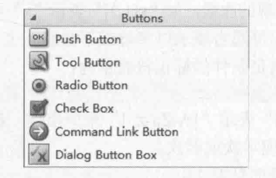

Button
- Push Button
- Tool Button
- Radio Button
- Check Button
- Command Link Button
- Dialog Button Box

QPushButton
Header: #include
qmake: QT += widgets Inherits: QAbstractButton
Inherited By: QCommandLinkButton
#include <QtWidgets/qtwidgetsglobal.h>
#include <QtWidgets/qabstractbutton.h>
QT_REQUIRE_CONFIG(pushbutton);
QT_BEGIN_NAMESPACE
class QPushButtonPrivate; //d指针工具类 Pimpl
class QMenu;
class QStyleOptionButton;
// 继承了 QAbstractButton
class Q_WIDGETS_EXPORT QPushButton : public QAbstractButton
{
……
public:
explicit QPushButton(QWidget *parent = nullptr);//parent默认未空
explicit QPushButton(const QString &text, QWidget *parent = nullptr);
QPushButton(const QIcon& icon, const QString &text, QWidget *parent = nullptr);
~QPushButton();
QSize sizeHint() const override;
QSize minimumSizeHint() const override;
bool autoDefault() const;
void setAutoDefault(bool);
bool isDefault() const;
void setDefault(bool);
void setFlat(bool);
bool isFlat() const;
public Q_SLOTS:
#if QT_CONFIG(menu) // 如果链接了menu库
void showMenu();
#endif
protected:
bool event(QEvent *e) override;
void paintEvent(QPaintEvent *) override;
void keyPressEvent(QKeyEvent *) override;
void focusInEvent(QFocusEvent *) override;
void focusOutEvent(QFocusEvent *) override;
void initStyleOption(QStyleOptionButton *option) const;
QPushButton(QPushButtonPrivate &dd, QWidget* parent = nullptr);
public:
private:
Q_DISABLE_COPY(QPushButton)
Q_DECLARE_PRIVATE(QPushButton)
#if QT_CONFIG(menu)
Q_PRIVATE_SLOT(d_func(), void _q_popupPressed())
#endif
};
QT_END_NAMESPACE
QToolButton
Header: #include
qmake: QT += widgets
Inherits: QAbstractButton
注 ：Q_PROPERTY
#ifndef QTOOLBUTTON_H
#define QTOOLBUTTON_H
#include <QtWidgets/qtwidgetsglobal.h>
#include <QtWidgets/qabstractbutton.h>
QT_REQUIRE_CONFIG(toolbutton);
QT_BEGIN_NAMESPACE
class QToolButtonPrivate;
class QMenu;
class QStyleOptionToolButton; // Action样式
class Q_WIDGETS_EXPORT QToolButton : public QAbstractButton
{
Q_OBJECT
Q_ENUMS(Qt::ToolButtonStyle Qt::ArrowType)
#if QT_CONFIG(menu) // menu联动
Q_PROPERTY(ToolButtonPopupMode popupMode READ popupMode WRITE setPopupMode) // [qprop]
#endif
Q_PROPERTY(Qt::ToolButtonStyle toolButtonStyle READ toolButtonStyle WRITE setToolButtonStyle)
Q_PROPERTY(bool autoRaise READ autoRaise WRITE setAutoRaise)
Q_PROPERTY(Qt::ArrowType arrowType READ arrowType WRITE setArrowType)
public:
enum ToolButtonPopupMode {
DelayedPopup,
MenuButtonPopup,
InstantPopup
};
Q_ENUM(ToolButtonPopupMode)
explicit QToolButton(QWidget *parent = nullptr);
~QToolButton();
QSize sizeHint() const override;
QSize minimumSizeHint() const override;
Qt::ToolButtonStyle toolButtonStyle() const;
Qt::ArrowType arrowType() const;
void setArrowType(Qt::ArrowType type);
#if QT_CONFIG(menu)
void setMenu(QMenu* menu);
QMenu* menu() const;
void setPopupMode(ToolButtonPopupMode mode);
ToolButtonPopupMode popupMode() const;
#endif
QAction *defaultAction() const;
void setAutoRaise(bool enable);
bool autoRaise() const;
public Q_SLOTS:
#if QT_CONFIG(menu)
void showMenu();
#endif
void setToolButtonStyle(Qt::ToolButtonStyle style);
void setDefaultAction(QAction *);
Q_SIGNALS:
void triggered(QAction *);
protected:
bool event(QEvent *e) override;
void mousePressEvent(QMouseEvent *) override;
void mouseReleaseEvent(QMouseEvent *) override;
void paintEvent(QPaintEvent *) override;
void actionEvent(QActionEvent *) override;
void enterEvent(QEvent *) override;
void leaveEvent(QEvent *) override;
void timerEvent(QTimerEvent *) override;
void changeEvent(QEvent *) override;
bool hitButton(const QPoint &pos) const override;
void nextCheckState() override;
void initStyleOption(QStyleOptionToolButton *option) const;
private:
Q_DISABLE_COPY(QToolButton)
Q_DECLARE_PRIVATE(QToolButton)
#if QT_CONFIG(menu)
Q_PRIVATE_SLOT(d_func(), void _q_buttonPressed())
Q_PRIVATE_SLOT(d_func(), void _q_buttonReleased())
Q_PRIVATE_SLOT(d_func(), void _q_updateButtonDown())
Q_PRIVATE_SLOT(d_func(), void _q_menuTriggered(QAction*))
#endif
Q_PRIVATE_SLOT(d_func(), void _q_actionTriggered())
};
QT_END_NAMESPACE
#endif // QTOOLBUTTON_H